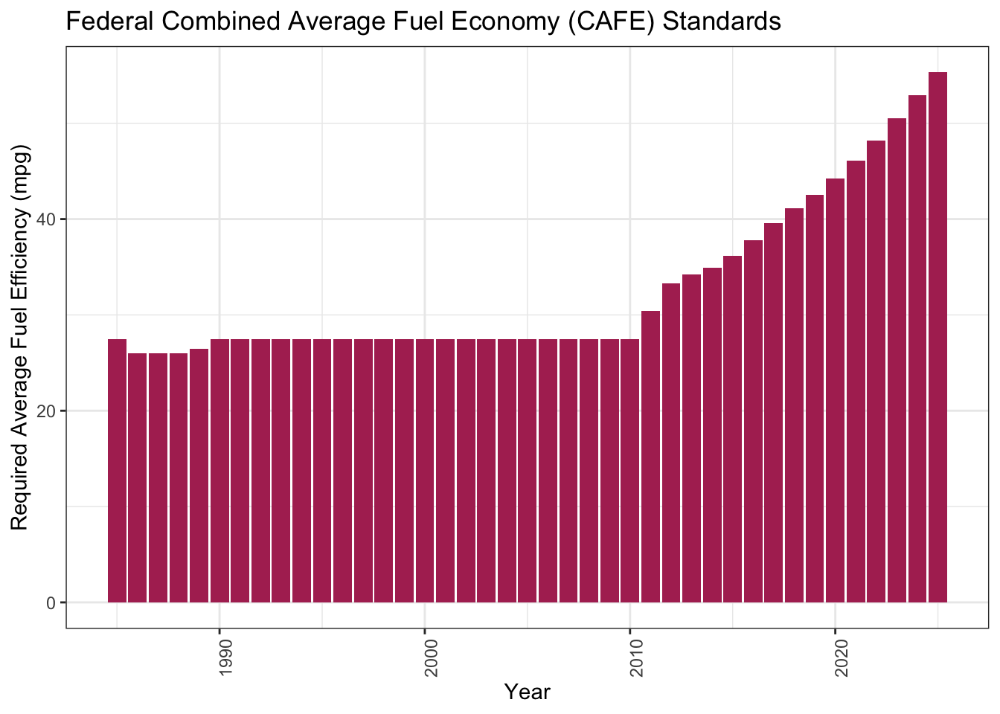
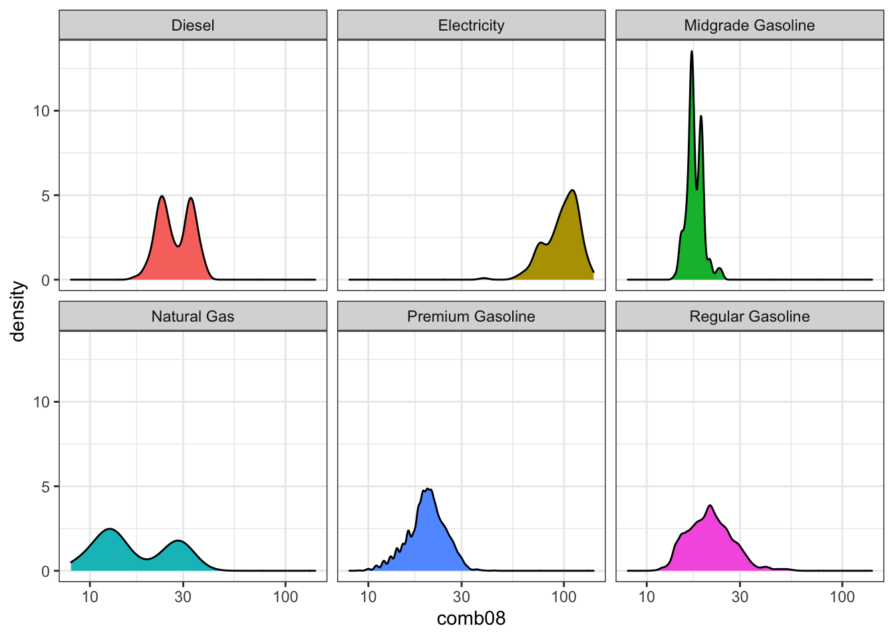
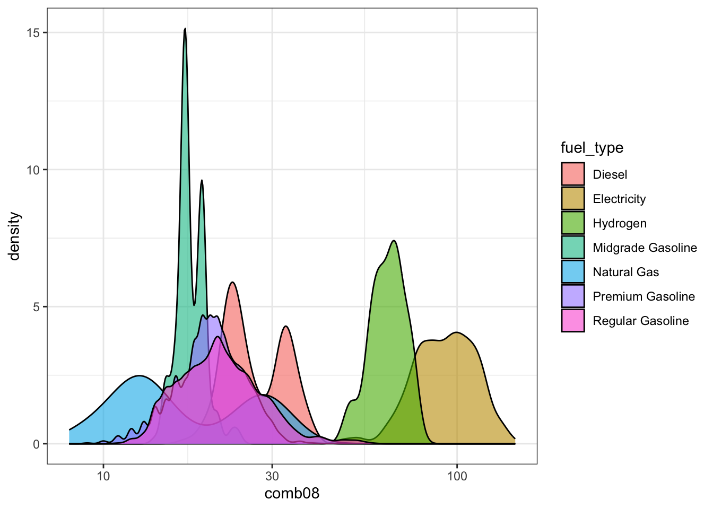

Chapter 7 Multivariate Data Exploration
7.1 Chapter 7 Objectives
This Chapter is designed around the following learning objectives. Upon completion, you should be able to:
- Define correlation, causation, and their difference
- Conduct a formal exploratory data analysis on multivariate data using geoms from
ggplot - Create and interpret a scatterplot between two variables
- Create and interpret a Q-Q plot
- Create and interpret directional bias in a Tukey mean difference plot
- Create and extract descriptive statistics and qualitative information from Boxplots
7.2 Bivariate Data
Whereas univariate data analyses are directed at “getting to know” the observations made for a single variable, bivariate—and multivariate— analyses are designed to examine the relationship that may exist between two (or more) variables. Like the Chapter on Univariate EDA, we will focus first on data exploration, which is a key step towards “getting to know” your data and one that should always proceed inferential statistics, or making conclusions about your data.
Bivariate means two variables where the observations are paired; each observation samples both variables so that they are linked.
7.3 Scatterplot
Undoubtedly, you have seen scatterplots many times before; we will discuss them in more detail here. The scatterplot allows you to assess the strength, direction, and type of relationship between two variables. This can be important for determining factors like:
- Correlation
- Linearity
- Performance (of a measurement) in terms of precision, bias, and dynamic range
Traditionally, a scatterplot shows paired observations of two variables with the dependent variable on the y-axis and the independent variable on the x-axis. Creating a plot in this way means that, before you begin, you must make a judgment call about the direction of the relationship (i.e., which variable depends on which). This relates to the scientific method and linear regression; we will discuss the latter in more detail later. For the purposes of exploratory data analysis, however, it actually doesn’t matter which variable goes on which axis. That said, since we don’t wish to break with tradition, let’s agree to follow the guidelines on independent (predictor) and dependent (outcome/response) variables. Although related, the researcher’s purpose or “mode” affects the intention behind a plot:
Scientific Method: The experimenter manipulates the control variable (independent; on x-axis) and observes the changes in the response variable (dependent; y-axis).
Statistics: The independent variable (x-axis) is thought to have some influence or control over the dependent variable (y-axis).
Exploratory Data Analysis: We throw two variables on a plot to investigate their relationship. We make a guess about which is the independent variable (x-axis) and which is the dependent variable (y-axis), and we hope that nobody calls us out if we got it wrong…
7.3.1 Causality
All this talk about dependent and independent variables is fundamentally rooted in the practice of causal inference reasoning, which is the ability to say that “action A caused outcome B”. Discovering—or proving—that one thing caused another to happen can be incredibly powerful. Proving causality leads to Nobel Prizes, creation of new laws and regulations, judgment of guilt or innocence in court, changing human behavior and convincing human minds, and, simply put, more understanding.
A full treatment of causal inference reasoning is beyond the scope of this course, but we will, from time to time, delve into this topic. The art of data science can be a beautiful and compelling way to demonstrate causality, but we need to learn to crawl before we can walk, run, or fly. For now, let’s put aside the pursuit of causation and begin with correlation.
7.3.2 Correlation
The scatterplot is a great way to visualize whether, and, to some extent, how, two variables are related to each other.
Correlation: A mutual relationship or connection between two or more things; the process of establishing a relationship or connection between two or more measures. The variables can move up or down together or be inversely related.
Below are four examples of bivariate data with differing degrees of correlation: perfect, strong, moderate, and none. These are qualitative terms, of course; what is “moderate” to one person may be poor and unacceptable to another. The qualitative strength of the correlation also depends on the research context.
If you want to understand how to assess the strength of correlation quantitatively, you can explore the Pearson Correlation Coefficient (r) in the Appendix, which is used to quantify the degree of linear correlation between two variables.
Figure 7.1: Scatterplot examples showing bivariate data with varying degrees of correlation.
In addition to the strength of the correlation, the sign and form of the correlation can vary, too:
- positive correlation: the dependent variable trends in the same direction as the independent variable
- negative correlation: the dependent variable decreases when the independent variable increases
- linear correlation: the relationship between the two variables can be shown with a straight line
- non-linear correlation: the relationship between the two variables is curvilinear
Figure 7.2: Scatterplot examples showing bivariate data with varying types of correlation.
7.3.3 Correlation \(\neq\) causation
Did you know that being a smoker is correlated with having a lighter in your pocket? Furthermore, it can be shown that keeping a lighter in your pocket is correlated with an increased risk of developing heart disease and lung cancer. Does this mean lighters in your pocket cause lung cancer?
Causation: the process or condition by which one event (cause) contributes to the occurrence of another event (effect). In this process, the cause is partly or wholly responsible for the effect.
Let’s take a closer look at the dangers of mistaking a correlated
relationship as causal relationship between two variables. Shown below is a
scatterplot that builds off the mpg dataset we first discussed in Chapter
4. Using the mpg dataframe, we will plot the relationship
between the number of cylinders in an engine (cyl) (independent variable)
and that vehicle’s fuel economy (hwy) (dependent variable).
Figure 7.3: Scatterplot of Engine Displacement vs. Fuel Economy
Looking at this plot, there appears a clear correlation between the number of cylinders in a vehicle and its fuel efficiency. A linear fit through these data gives a Pearson correlation coefficient of -0.76, which is not a perfect relationship but a strong one, nonethless. Does this mean that a causal relationship exists? If so, then we only need to mandate that all future vehicles on the road be built with 4-cylinder engines, if we want more a fuel-efficient fleet! That mandate, of course, would likely produce minimal effect. Just because two variables are correlated doesn’t mean that a change in one will cause a change in the other.
Those who understand internal combustion know that the number of cylinders is a design parameter related more to engine power than to engine efficiency. In other words, the number of cylinders helps determine total displacement volume. Indeed, the causal relationship for fuel efficiency, in terms of miles traveled per gallon, is due more directly to engine conversion efficiency, vehicle drag coefficient, and vehicle mass. If you want more fuel-efficient cars and trucks, you need more efficient engines that weigh less. In the 1990s and early 2000s nearly all engine blocks were made from cast iron. Today, nearly all engine blocks are made from aluminum. Can you guess why?
7.4 Exploring Multivariate Data
With multivariate data, we often consider more than just two variables; however, visualizing more than two variables in a single plot can be challenging. There are advanced statistical approaches to exploring such data, including multivariate regression, principal component analysis, and machine learning approaches, but these techniques are beyond the scope of this course. Here, I will introduce a few graphical techniques that are useful for exploring multivariate data.
7.4.1 Facets
One easy way to evaluate two or more variables is to create multiple plots (or
facets) with the ggplot2::facet() function. This function creates a series of
plots, as panels, where each panel represents a different value (or level) of a
third variable of interest. For example, let’s create a ggplot object from
the mtcars data set that explores the relationship between a vehicle’s fuel
economy and its weight. First, let’s create a simple bivariate scatterplot of
these data (mpg vs. wt) and fit a linear model through the data. Note: we
haven’t discussed modeling yet but more on that later).
# fit a linear model
g1_model <- lm(mpg ~ wt, data = mtcars)
# create a plot
g1 <- ggplot2::ggplot(data = mtcars,
mapping = aes(x = wt,
y = mpg)) +
geom_point() +
geom_smooth(model = g1_model,
method = "lm") +
ylab("Fuel Economy (mi/gal)") +
xlab("Vehicle Weight (x1000 lb)")
g1
Figure 7.4: Scatterplot of fuel economy vs. vehicle weight from the mtcars dataset.
Looking back at Figure 7.3, we know that the number of
cylinders (cyl) is also associated with fuel efficiency, and many of the
vehicles from mpg have different cyl numbers. To examine these three
variables together (mpg, wt, and cyl), we can create a scatterplot that
is faceted according to the cyl variable. This is relatively easy to do in
ggplot2 by adding a facet_grid() layer onto our ggplot object. The key
details to pass to facet_grid() are:
- Whether we want to see the facets as rows or columns, and
- The variable being used to create the facets.
These two specifications can be made as a single argument to facet_grid() in
the form:
facet_grid(rows = vars(variable))orfacet_grid(cols = vars(variable)), where variable is the name of the column vector used to define the facets.
In this case, seeing the plots in columns seems fine, so we would add
facet_grid(cols = vars(cyl) to the ggplot object as follows:
# facet previous plot by `cyl` columns and retain labels
g1 + facet_grid(cols = vars(cyl),
labeller = label_both) # add names & values to each panel label
Figure 7.5: Scatterplots of fuel economy vs. vehicle weight by number of cylinders in the engine (data from the mtcars dataset).
Interestingly, but perhaps not surprising, we can see that the vehicles with different cylinder numbers tend to have different fuel efficiency, but, even within these facets, we still see a relationship between efficiency and vehicle weight. Note that the faceting call led to the fitting of three different linear models—one for each facet.
Here are the same data in a plot that is faceted by rows instead of columns.
# facet previous plot by`cyl` in rows and retain labels
g1 + facet_grid(rows = vars(cyl),
labeller = label_both)
Figure 7.6: Scatterplots of fuel economy vs. vehicle weight by number of cylinders in the engine (data from the mtcars dataset).
7.4.2 Colors
We can also use color to indicate variation in data; this can be useful for
introducing a third variable into scatter and time-series plots. When
introducing color as a variable into a plot, you must do so through an
aesthetic, such as geom_point(aes(color = cyl)).
Let’s recreate Figure 7.4 and highlight the cyl variable using
different colors. The addition of color provides us with the same level of
insight as the facets above.
# instruct R to treat the `cyl` variable as a factor with discrete levels
# this, in turn, tells ggplot2 to assign discrete colors to each level
# `cyl` as a factor with four levels
mtcars$cyl <- as.factor(mtcars$cyl)
# recreate previous plot with color option
g3 <- ggplot2::ggplot(data = mtcars,
mapping = aes(x = wt,
y = mpg,
color = cyl)) +
geom_point() +
ylab("Fuel Economy (mi/gal)") +
xlab("Vehicle Weight, (x1000 lb)")
# call plot
g3Figure 7.7: Vehicle fuel economy vs. weight and colored by number of engine cylinders (data from mtcars)
When using color, be aware that many people are unable to distinguish red from green or blue from yellow. Many options exist to avoid issues from color blindness (e.g., viridis palette) and websites like color-blindness.com allow you to upload image files as a test against common forms.
Here is an updated version of Figure 7.7 that avoids issues
with color blindness and, better yet, differentiates the cyl variable with
both colors and symbols.
# recreate previous plot with color-blind-friendly colors and shapes
ggplot2::ggplot(data = mtcars,
mapping = aes(x = wt,
y = mpg,
color = cyl,
shape = cyl)) + # distinguish by shape also!
geom_point(size = 2.5) +
ylab("Fuel Economy (mi/gal)") +
xlab("Vehicle Weight, (x1000 lb)") +
scale_colour_manual(values = c("sandybrown", # color-blind-friendly colors
"orangered",
"steelblue2")) +
theme_classic()Figure 7.8: Vehicle fuel economy vs. weight and colored by number of engine cylinders (data from mtcars)
Whenever you use color to differentiate variables, use symbols, too.
7.5 Chapter 7 Exercises
7.5.1 Fuel economy data
This in-class exercise is will conduct an exploratory, multivariate data
analysis on vehicle fuel economy. We will begin by downloading a .zip file from
fueleconomy.gov, which
is a Federal program that tracks the fuel economy of all vehicles sold in the
United States. The .zip file contains a .csv with fuel economy information for
nearly every vehicle manufactured between 1984 and today. We will use the
readr and dplyr packages to load and clean the data, respectively. A data
dictionary (something that defines and explains each variable in the dataset)
is also available at the website above.
7.5.2 Import and wrangle data
The first code chunk will download the data directly into a temporary file
using download.file() from base R. We will then unzip() (base R) the temp
file into a .csv and use readr to read that .csv into a dataframe named
raw_data.
# create an empty temporary object to hold the zipped data
temp <- base::tempfile()
# download the file into temp object
utils::download.file(
url = "https://www.fueleconomy.gov/feg/epadata/vehicles.csv.zip",
destfile = temp,
mode="wb")
# unzip the folder within temp object to acess csv
temp2 <- utils::unzip(temp,
"vehicles.csv",
exdir = "./data/") # unzip .csv to local directory
# import csv into df object
raw_data <- readr::read_csv(temp2) #read the csv into a data frame
# delete the temp file
base::unlink(temp)
# remove the two temp objects from local environment
base::rm(temp, temp2) Public Service Announcement: Notice the use of rm() from base R in the
above code. This is an example of a recommended use case of this function;
do not EVER use this function to “restart” your R session. If you do, Jenny
Bryan will find you and throw your computer out the window.
Looking at the raw_data dataframe, we see there are 83 variables with over
42,000 observations. That’s a LOT of vehicles! In most analyses of large
datasets, we don’t need to inspect every variable. Let’s create a vector of
variables (vars_needed) that we want to keep and pass that vector to
dplyr::select() to retain only the variables we want. To pass a character
vector as an argument to dplyr::select(), instead of just a single column
name, we use the all_of() function, which is an argument modifier from the
tidyselect R package. You can type ?tidyselect::all_of in the R console to
learn more. Essentially, tidyselect::all_of() tells dplyr::select() to
expect a character vector of column names to retain in the datset.
# create a vector of var names to retain
vars_needed <- c("id",
"make",
"model",
"year",
"cylinders",
"displ",
"drive",
"trany",
"VClass",
"fuelType1",
"comb08",
"highway08",
"city08")
# select necessary variables
df_mpg <- raw_data %>%
dplyr::select(tidyselect::all_of(vars_needed))
# remove full dataframe from environment
rm(raw_data) As you have seen before, some of these variables can be coded as factors,
which are categorical variables that can be classified into discrete levels.
For example, there are a finite number of vehicle transmission (trany) or
drivetrain (drive) types on the market, and, by telling R to code these data
as factors, we can analyze these variables in categorical form.
First, we will create a vector of variable names that we want to code as
factors, vars_factr. Then we will apply the as.factor() function to those
variables using dplyr::mutate(dplyr::across()). The across() function from
dplyr allows one to apply the same transformation to multiple columns in a
dataframe and is similar to how we used tidyselect::all_of() in the previous
example. We will also take the opportunity to rename a few of these variables,
following our naming guidelines discussed in earlier chapters, and to filter
the data to retain only vehicles made after the year 2000.
# identify the columns that we want to convert to a factor
vars_factr <- c("make", "drive", "trany", "VClass", "fuelType1")
# overwrite existing df
df_mpg <- df_mpg %>%
# convert select vars to factors
dplyr::mutate(dplyr::across(tidyselect::all_of(vars_factr),
.fns = as.factor)) %>%
# overwrite column names with simpler names
dplyr::rename(fuel_type = fuelType1,
cyl = cylinders,
tran = trany,
v_class = VClass) %>% # easier string to type
# keep only data collected after 2000 for the sake of simplicity
dplyr::filter(year >= 2000)
# remove previous objects from global environment
rm(vars_needed, vars_factr)7.5.3 Check data
Begin as we always do, by simply looking at some of the data.
## # A tibble: 6 x 13
## id make model year cyl displ drive tran v_class fuel_type comb08
## <dbl> <fct> <chr> <dbl> <dbl> <dbl> <fct> <fct> <fct> <fct> <dbl>
## 1 15589 Acura NSX 2000 6 3 Rear… Auto… Two Se… Premium … 18
## 2 15590 Acura NSX 2000 6 3.2 Rear… Manu… Two Se… Premium … 18
## 3 15591 BMW M Co… 2000 6 3.2 Rear… Manu… Two Se… Premium … 19
## 4 15592 BMW Z3 C… 2000 6 2.8 Rear… Auto… Two Se… Premium … 19
## 5 15593 BMW Z3 C… 2000 6 2.8 Rear… Manu… Two Se… Premium … 19
## 6 15594 BMW Z3 R… 2000 6 2.5 Rear… Auto… Two Se… Premium … 19
## # … with 2 more variables: highway08 <dbl>, city08 <dbl>Next, let’s take a look at some of the factor levels. There are lots of ways
to do this in R, but the levels() function is the most straightforward.
## [1] "2-Wheel Drive" "4-Wheel Drive"
## [3] "4-Wheel or All-Wheel Drive" "All-Wheel Drive"
## [5] "Front-Wheel Drive" "Part-time 4-Wheel Drive"
## [7] "Rear-Wheel Drive"## [1] "Diesel" "Electricity" "Midgrade Gasoline"
## [4] "Natural Gas" "Premium Gasoline" "Regular Gasoline"## [1] "Compact Cars" "Large Cars"
## [3] "Midsize Cars" "Midsize Station Wagons"
## [5] "Midsize-Large Station Wagons" "Minicompact Cars"
## [7] "Minivan - 2WD" "Minivan - 4WD"
## [9] "Small Pickup Trucks" "Small Pickup Trucks 2WD"
## [11] "Small Pickup Trucks 4WD" "Small Sport Utility Vehicle 2WD"
## [13] "Small Sport Utility Vehicle 4WD" "Small Station Wagons"
## [15] "Special Purpose Vehicle" "Special Purpose Vehicle 2WD"
## [17] "Special Purpose Vehicle 4WD" "Special Purpose Vehicles"
## [19] "Special Purpose Vehicles/2wd" "Special Purpose Vehicles/4wd"
## [21] "Sport Utility Vehicle - 2WD" "Sport Utility Vehicle - 4WD"
## [23] "Standard Pickup Trucks" "Standard Pickup Trucks 2WD"
## [25] "Standard Pickup Trucks 4WD" "Standard Pickup Trucks/2wd"
## [27] "Standard Sport Utility Vehicle 2WD" "Standard Sport Utility Vehicle 4WD"
## [29] "Subcompact Cars" "Two Seaters"
## [31] "Vans" "Vans Passenger"
## [33] "Vans, Cargo Type" "Vans, Passenger Type"7.5.4 Check for missing data
7.5.4.1 Base-only
Next, let’s see whether this dataframe contains missing data (NAs).
## [1] 478With a dataframe of this size, we shouldn’t be surprised that there are
478 NA values present. The next question is: where do
these NA values show up? There are several ways to answer this question;
here, we will use the stats::complete.cases() function with a
dplyr::filter() search.
The compelete.cases() function returns a logical vector indicating
which rows are complete (i.e., no missing values). The opposite of this
logical function, !complete.cases(), should return ONLY those rows that do
contain NAs. Let’s create a subset of df_mpg that only contains rows with
NA present.
# create df of observations with missing values
df_mpg.na <- df_mpg %>%
dplyr::filter(!stats::complete.cases(.))
# examine df
head(df_mpg.na)## # A tibble: 6 x 13
## id make model year cyl displ drive tran v_class fuel_type comb08
## <dbl> <fct> <chr> <dbl> <dbl> <dbl> <fct> <fct> <fct> <fct> <dbl>
## 1 16423 Niss… Altr… 2000 NA NA <NA> <NA> Midsiz… Electric… 85
## 2 16424 Toyo… RAV4… 2000 NA NA 2-Wh… <NA> Sport … Electric… 72
## 3 17328 Toyo… RAV4… 2001 NA NA 2-Wh… <NA> Sport … Electric… 72
## 4 17329 Ford Th!nk 2001 NA NA <NA> <NA> Two Se… Electric… 65
## 5 17330 Ford Expl… 2001 NA NA 2-Wh… <NA> Sport … Electric… 39
## 6 17331 Niss… Hype… 2001 NA NA <NA> <NA> Two Se… Electric… 75
## # … with 2 more variables: highway08 <dbl>, city08 <dbl>Here, we discover that most of the the NA values are in the cyl, displ,
and tran, columns. Further, we see that all of these vehicles have a
fuel_type of electric—which makes sense as all-electric vehicles do not
have internal combustion. This may be a variable level that we choose to
exclude from certain analyses later…
7.5.4.2 Mixed
Filter the df_mpg data for any variables (dplyr::any_vars()) that contain
NA. Like tidyselect::all_of() that was used to clean the dataframe above,
the any_vars() function is a helper function designed for use within dplyr
and tidyr verbs. This example is for illustration only. Some of the
functions have been deprecated or superseded and others should be used instead.
# base R + tidyverse approach to examining missing data
df_mpg.na.2 <- df_mpg %>%
dplyr::filter_all(dplyr::any_vars(is.na(.)))
# check data
head(df_mpg.na.2)## # A tibble: 6 x 13
## id make model year cyl displ drive tran v_class fuel_type comb08
## <dbl> <fct> <chr> <dbl> <dbl> <dbl> <fct> <fct> <fct> <fct> <dbl>
## 1 16423 Niss… Altr… 2000 NA NA <NA> <NA> Midsiz… Electric… 85
## 2 16424 Toyo… RAV4… 2000 NA NA 2-Wh… <NA> Sport … Electric… 72
## 3 17328 Toyo… RAV4… 2001 NA NA 2-Wh… <NA> Sport … Electric… 72
## 4 17329 Ford Th!nk 2001 NA NA <NA> <NA> Two Se… Electric… 65
## 5 17330 Ford Expl… 2001 NA NA 2-Wh… <NA> Sport … Electric… 39
## 6 17331 Niss… Hype… 2001 NA NA <NA> <NA> Two Se… Electric… 75
## # … with 2 more variables: highway08 <dbl>, city08 <dbl>7.5.4.3 Mapping
Note: In Chapter 8, you will learn to “map” the sum() and is.na() functions to each column of the data frame using map_dfc from the purrr package, which is designed to apply one ore more functions across columns of a data frame. This approach is the recommended way.
7.5.5 Visualize data
7.5.5.1 Tidy data
Our primary variable of interest is fuel economy, so let’s begin by visualizing
the location, dispersion, and shape of city08, highway08, and comb08,
which represent city, highway and combined fuel economy estimates. Note that
df_mpg is not in a tidy format, as fuel economy data is presented in three
different columns. We’ll fix that with tidyr::pivot_longer().
# before visualizing the data, convert to tidy format
tidy_mpg <- df_mpg %>%
# choose simple names
dplyr::rename(city = city08,
hwy = highway08,
comb = comb08) %>%
# change data structure from wide to long
tidyr::pivot_longer(cols = c("city", "hwy", "comb"),
names_to = "metric",
values_to = "mpg") %>%
# switch var to factor
dplyr::mutate(metric = as.factor(metric))7.5.5.2 Multivariate EDA options
With the data properly tidy, we can use our basic EDA plots with stat_ecdf(),
geom_boxplot(), and geom_histogram(), to visualize the fuel economy data.
To show the different variables within the same plot, we use color =
or fill = as an extra aesthetic. All three plots are then laid out using
gridExtra::grid.arrange().
# create cumulative distribution function plot
ecdf <- ggplot2::ggplot(data = tidy_mpg,
mapping = aes(x = mpg,
color = metric)) +
stat_ecdf() +
theme_bw() +
scale_x_log10() +
xlab(NULL) +
ylab("Quantile")
# create boxplot
box <- ggplot2::ggplot(data = tidy_mpg,
mapping = aes(x = mpg,
fill = metric,
y = metric)) +
geom_boxplot(outlier.alpha = 0.05) +
theme_bw() +
scale_x_log10() +
xlab(NULL) +
ylab("Metric")
# create histogram
hist <- ggplot2::ggplot(data = tidy_mpg,
mapping = aes(x = mpg,
fill = metric)) +
geom_histogram(bins = 35,
alpha = 0.75,
position = "stack") +
theme_bw() +
scale_x_log10() +
xlab("Fuel Economy, mi/gal") +
ylab("Counts")
# embed plots into one figure
gridExtra::grid.arrange(ecdf, box, hist,
widths = c(0.4,1,0.4),
layout_matrix = rbind(c(NA, 1, NA),
c(NA, 2, NA),
c(NA, 3, NA)))Figure 7.9: Cumulative Distribution, Histogram, and Boxplots of 21st Centurty Vehicles.
7.5.6 Multivariate time series
Next, let’s look at a rough time series (by year) of all the combined fuel
economy values, comb08, for all vehicle observations. The fuel economy data
will be shown with boxplots, and we will use group = year as an aesthetic to
show the overall time series. We will use a log-scale y-axis due to the large
variation expected, and outliers will be made more transparent to soften their
effect.
# create time series plot
e1 <- ggplot2::ggplot(data = df_mpg,
mapping = aes(x = year,
y = comb08)) +
geom_boxplot(aes(group = year),
fill = "skyblue",
outlier.alpha = 0.1) +
scale_y_log10(limits = c(10,100)) +
theme_bw()
# call plot
e1Figure 7.10: Boxplots of fleet-wide fuel efficiency by year.
7.5.6.1 Consider context
This Department of Energy website outlines
the Corporate Average Fuel Economy (CAFE) standards from the Environmental
Protection Agency that require vehicles to meet set fuel economy levels, in
terms of miles per gallon, or “mpg”, across the “fleet” of available vehicles.
Let’s load a .csv file named cafe and look at the requirements by year.
# import data
cafe <- read_csv("./data/CAFE_stds.csv", col_names = c("year", "mpg_avg"), skip = 1)
# plot cafe data
cafe.plot <- ggplot2::ggplot(data = cafe,
mapping = aes(group = year,
y = mpg_avg,
x = year)) +
geom_col(fill = "maroon") +
theme_bw() +
theme(axis.text.x = element_text(angle = 90,
hjust = 1)) +
labs( y = "Required Average Fuel Efficiency (mpg)",
x = "Year",
title = "Federal Combined Average Fuel Economy (CAFE) Standards")
# call cafe plot
cafe.plot 
This is a nice explanatory story of why the average fuel economy numbers don’t match well to the published CAFE standards.
7.5.7 Density plots
Create a series of geom_density plots showing combined fuel economy comb08
across all vehicles and years as a function of fuel_type. Break out the
different fuel_type categories into facets (ncol = 3).
# density plot of combined fuel economy by fuel type with facets
g1 <- ggplot2::ggplot(data = df_mpg) +
geom_density(aes(x = comb08, # notice the different location option for x aes
fill = fuel_type)) +
facet_wrap(~ fuel_type,
ncol = 3) +
scale_x_log10() +
theme_bw() +
theme(legend.position = "none")
# call plot
g1
Now show the same plot without facets.
# density plot of combined fuel economy by fuel type without facets
g2 <- ggplot2::ggplot(data = df_mpg,
mapping = aes(x = comb08)) + # now x aes is here
geom_density(aes(fill = fuel_type),
position = "identity",
alpha = 0.6,
adjust = 1) +
scale_x_log10() +
theme_bw()
# call plot
g2
7.5.8 More multivariate plotting
Next, let’s examine the effect of vehicle class on combined fuel economy for a single year: 2020.
# filter to year 2020 and reorder factor levels
df_mpg.2020 <- df_mpg %>%
dplyr::filter(year == 2020) %>%
dplyr::mutate(v_class = forcats::fct_reorder(v_class, highway08, median))
# create plot of 2020 combined fuel economy
g1 <- ggplot2::ggplot(data = df_mpg.2020) +
geom_boxplot(aes(x = highway08,
color = v_class,
y = v_class)) +
scale_x_log10() +
theme_bw() +
ylab("") +
xlab("Highway Fuel Economy") +
theme(legend.position = "none")
# call plot
g1Figure 7.11: Highway Fuel Economy for 2020 Vehicles by Type
7.5.9 Practice questions
Finally, let’s ask some simple questions and use some basic data wrangling to get the answers.
7.5.9.1 Question 1
Among 4-cylinder vehicles with Front-Wheel Drive, what make/model has the best highway fuel economy in 2018?
df_mpg %>%
dplyr::filter(cyl == 4,
drive == "Front-Wheel Drive",
year == 2018) %>%
dplyr::slice_max(order_by = highway08,
n = 1) %>%
dplyr::select(make, model, drive, year, highway08)## # A tibble: 1 x 5
## make model drive year highway08
## <fct> <chr> <fct> <dbl> <dbl>
## 1 Hyundai Ioniq Blue Front-Wheel Drive 2018 59Q2: Among 8-cylinder vehicles with Rear-Wheel Drive, what make/model has the worst city fuel economy in 2019?
df_mpg %>%
dplyr::filter(cyl == 8,
drive == "Rear-Wheel Drive",
year == 2019) %>%
dplyr::slice_min(order_by = city08) %>%
dplyr::select(make, model, drive, year, city08)## # A tibble: 1 x 5
## make model drive year city08
## <fct> <chr> <fct> <dbl> <dbl>
## 1 Bentley Mulsanne Rear-Wheel Drive 2019 10Figure 7.12: The Bentley Mulsanne: $330k lets you park it on the sidewalk!